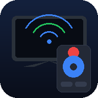

1. Sigurado: parehong WiFi
Dapat konektado sa parehong WiFi network ang phone mo at ang Smart TV. Hindi gagana ang PindotTV kung iba ang network (hal. mobile data sa phone, WiFi sa TV).

PindotTVI-save ang mga TV mo dito para mabilis mag-switch. Pindot lang para gamitin.
Basahin muna ito bago gamitin ang PindotTV - para alam mo ang gagana at hindi.
Dapat konektado sa parehong WiFi network ang phone mo at ang Smart TV. Hindi gagana ang PindotTV kung iba ang network (hal. mobile data sa phone, WiFi sa TV).
Kailangan mo ang IP address ng TV (hal. 192.168.1.50) para ito i-type sa "Magdagdag ng TV":
| Brand | Status | Paliwanag |
|---|---|---|
| Roku TV / Stick | Pinaka-Reliable | Gamit ang Roku ECP (port 8060). Pero dahil HTTP lang (hindi HTTPS) ang Roku, posibleng harangin ng browser - tingnan ang #4 sa baba. |
| Samsung Smart TV (Tizen, 2016+) | Limitado | Gumagamit ng secure WebSocket (wss) na may "self-signed" certificate. Kailangan munang tanggapin ang certificate warning - tingnan ang #5. |
| LG Smart TV (webOS) | Limitado | Parehong WebSocket pairing tulad ng Samsung. May "Connect?" prompt na lalabas sa TV - tanggapin agad. |
| Sony (Bravia / Android TV) | Limitado | Gumagamit ng IRCC-IP (HTTP) na may "Pre-Shared Key" (PSK). Kailangang i-enable muna ang "IP Control" sa TV settings at ilagay ang parehong PSK sa app. Posibleng harangin ng browser ang custom headers. |
| Panasonic (Viera) | Limitado | Gumagamit ng "Network Control" / TV Remote App (HTTP). Kailangang i-enable muna ito sa TV settings. Posibleng harangin din ng browser ang ilang request. |
| Non-Smart TV / walang WiFi | Hindi Suportado | Kailangan ng Infrared (IR) signal para sa mga ito, at hindi kayang gumawa ng IR ang isang browser/PWA. Kailangan ng external IR blaster hardware. |
Ang PindotTV ay naka-host sa secure na HTTPS (GitHub Pages). Pero ang Roku ECP ay HTTP lang sa loob ng inyong WiFi. Pinipigilan ng mga browser (lalo na Chrome) ang "secure" page na mag-request sa "insecure" address - ito ang tawag na Mixed Content.
Paano malalampasan (workaround):
Kung wala ang option na ito sa browser mo, posibleng hindi gumana ang direct connection - pero gagana pa rin ang pag-save ng mga TV at ang ibang parte ng app.
Ang Samsung at LG ay gumagamit ng self-signed certificate sa kanilang local WebSocket server, kaya bababala ang browser. Para tanggapin ito:
https://[IP-ng-TV]:8002 (Samsung) o https://[IP-ng-TV]:3001 (LG).Sinusubukan ng PindotTV na kumonekta sa IP address ng TV. Kung successful ang koneksyon, magiging berde (online) ang indicator. Kung walang response o naharang, magiging pula (offline) ito. Hindi ito 100% guarantee - posibleng tama ang IP pero naka-block ng browser security.
Lahat ng impormasyon ng TV mo (pangalan, IP address) ay naka-save lang sa device mo (localStorage ng browser). Walang ipinapadalang data sa server o sa ibang tao.